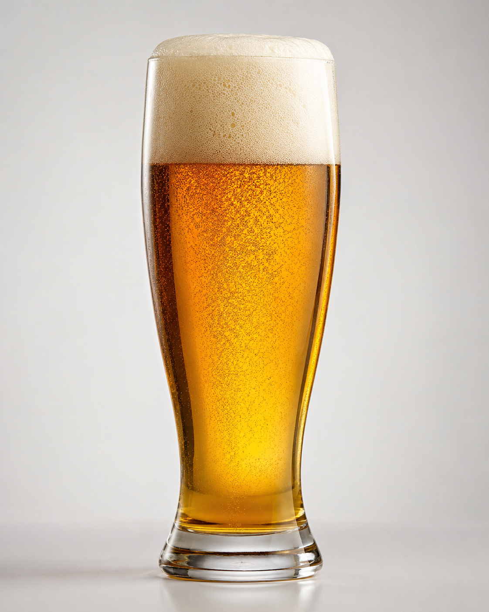

ЦКТ · Танковое
Танковое Советское
Пиво живое, непастеризованное — все полезные вещества от солода и хмеля сохранены. Естественная газация делает его похожим на пиво времён СССР: натуральное и легкое на вкус. Привозим напрямую с завода — прямые и частые поставки гарантируют свежесть.
Крепость4%
Плотность11°
Горечь2/5